Transformers¶
1. Self-attention¶
Attention（注意力机制）
最早的相关论文 Attention is all you need.
李宏毅深度学习的笔记里有 Self-attention 的具体介绍
2. Attention Visualization¶
直观的连线与权重表示
- 可视化图表通常通过将输入句子的单词排列在两侧（或上下），并在它们之间画线来展示关系。
- 线条的粗细或颜色的深浅代表了注意力权重（Attention Weight）的大小。线条越深或越粗，说明在编码当前词时，模型对另一个词的“关注度”越高、提取的信息越多。
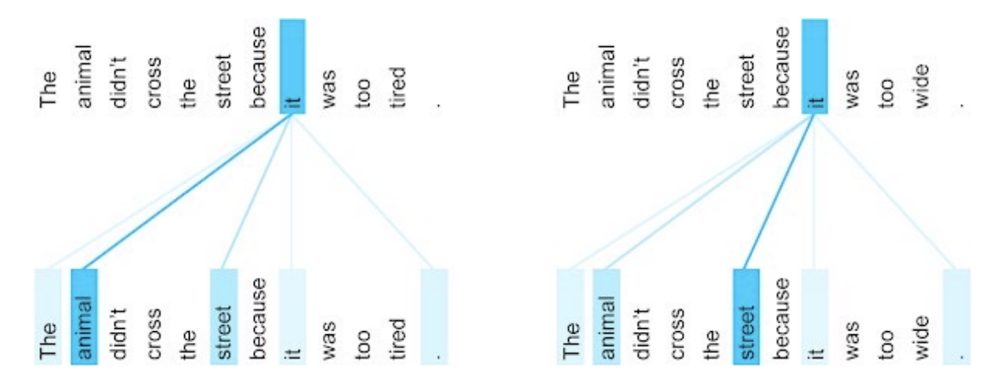
- 这是从一个经过英法翻译训练的 Transformer 模型的第 5 层到第 6 层的自注意力分布中截取的（展示了 8 个注意力头中的其中一个），这证明了模型能够根据上下文动态调整词向量的语义。
Multi-head Attention 的协同作用
- 包含多种颜色线条交织的复杂图表
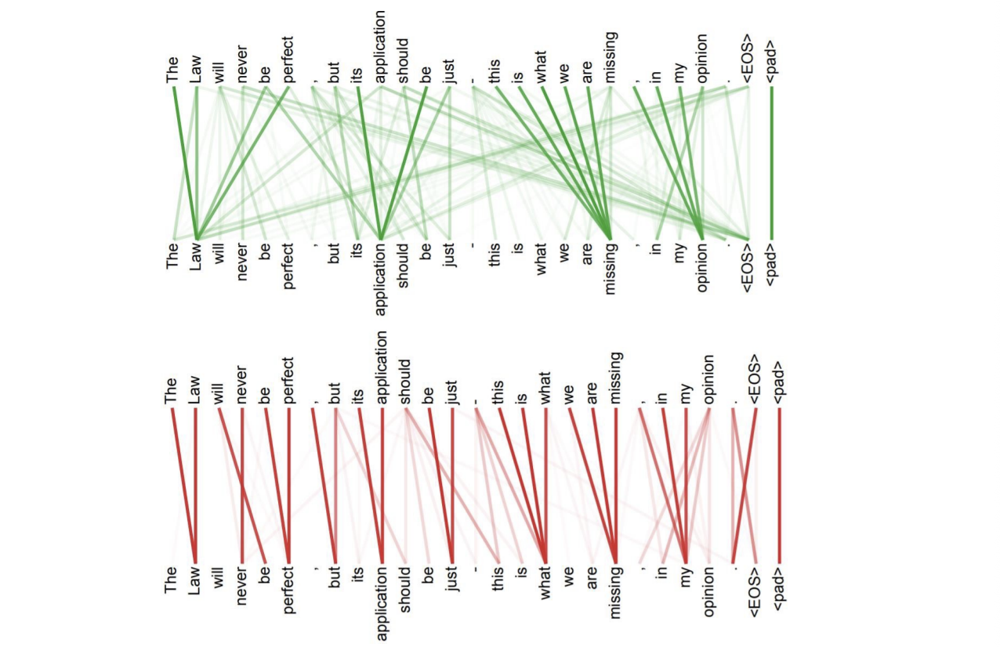
- 在这些图中，不同的颜色代表了模型中不同的注意力 “头（Head）”
- 多头机制的作用：它允许模型在同一时间，让不同的“头”去关注不同维度的语言特征，最终将这些信息综合起来得出结果。
3. Transformer¶
Transformer 架构是由 Vaswani 等人在 2017 年的经典论文《Attention is All You Need》中提出的一种具有里程碑意义的深度学习模型。它彻底抛弃了传统的 RNN 架构，完全基于注意力机制（Attention）来构建端到端（Sequence-to-Sequence）模型。这种设计不仅大幅提升了模型在翻译等任务上的表现，还因为主要依赖矩阵乘法，极大地提高了并行计算的速度。
Seq2seq with Attention
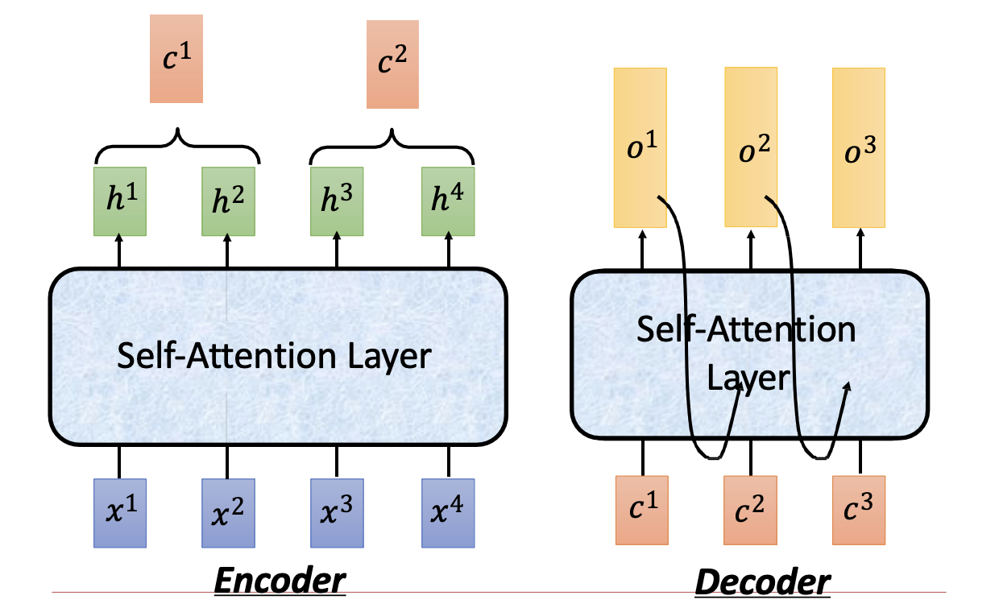
3.1 Transformer Architecture¶
整体架构为 Encoder-Decoder 架构：
- Transformer 遵循 Seq2Seq 框架，分为编码器（Encoder）和解码器（Decoder）两部分。模型由多个相同的层堆叠而成（图中标记为 \(N \times\)），包含以下核心子模块：
- 多头注意力层（Multi-Head Attention）
- 前馈神经网络（Position-wise Feed-Forward Networks）
- 残差连接与层归一化（Add & Norm / Layer Norm）
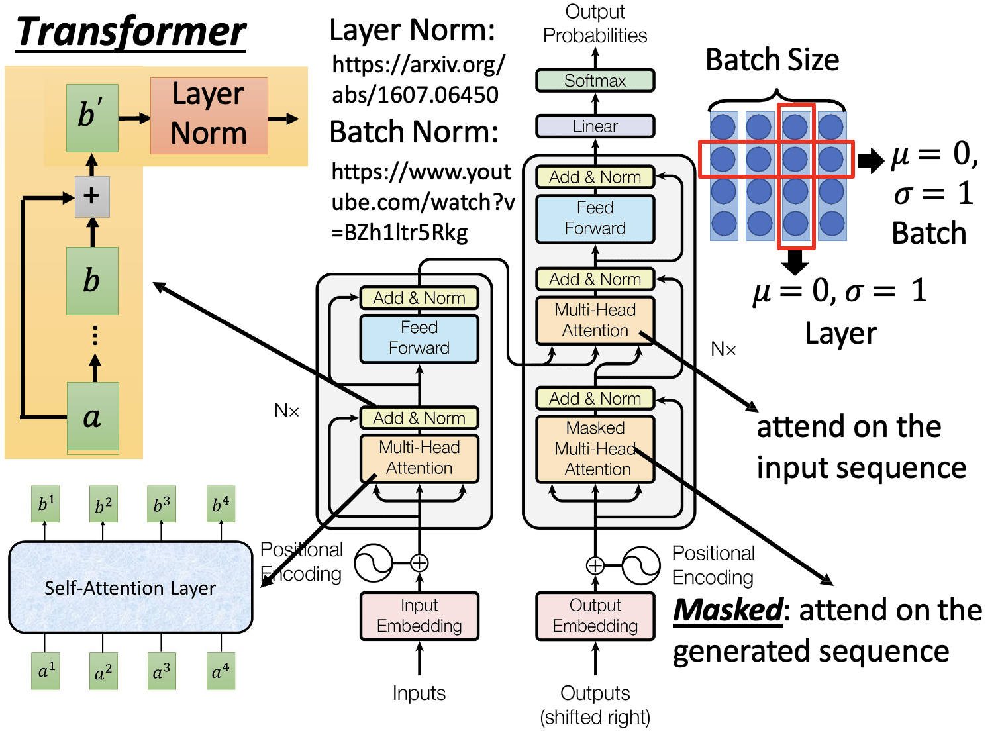
3.2 Attention Mechanism¶
Self-Attention & Scaled Dot-Product
注意力分数计算
- 通过权重矩阵 \(W_q, W_k, W_v\) 将输入映射为三个独立的向量：
查询向量（Query, \(q_i\)）、键向量（Key, \(k_i\)）和值向量（Value, \(v_i\)） - 将所有的 \(q\)、\(k\)、\(v\) 拼接成矩阵 \(Q, K, V\)
- 缩放（Scaled）：当向量维度变大时，点积的绝对值会急剧增加，导致 Softmax 函数进入梯度极小的区域。因此，Transformer 引入了缩放因子 \(\frac{1}{\sqrt{d_k}}\)（\(d_k\) 是向量维度）来进行修正
在 Transformer 的编码器和解码器中，注意力机制在三个的地方发挥作用：
- Encoder 中的 Multi-Head Attention：
- Transformer 并行计算了多次注意力，这被称为“多头注意力”
- 模型将输入映射到多个不同的线性子空间中（例如使用 \(W_{q,1},W_{q,2}\)），允许模型关注来自不同表示子空间的信息
- 最终所有的 head 拼接在一起，并通过一个线性映射矩阵（\(W_O\)）输出
- Decoder 底部的 Masked Multi-Head Attention：
- 在训练时，虽然模型能看到完整的正确输出序列，但 Decoder 在预测第 \(t\) 个词时解码器在生成序列时，不能“偷看”未来的词，所以必须加上掩码（Mask）
- Decoder 中部的 Multi-Head Attention (Cross-Attention)：
- Query 来源于 Decoder 上一步的输出，代表当前已经生成的语境和下一步的生成需求；Key 和 Value 则来源于 Encoder 的最终输出，代表源语言的全局上下文
- Decoder 拿着当前的生成需求（\(Q\)），去源文本（\(K, V\)）中寻找最相关的线索
3.3 Add & Norm¶
- Add（残差连接）：这里的黑线箭头就是一个跳跃连接（Skip Connection）
输入 \(a\) 在经过复杂的变换模块（绿色框 \(b\)）后，会和原始输入 \(a\) 直接相加。这有效解决了梯度消失 - Norm（层归一化）：相加之后的结果会进入 Layer Norm 模块进行数据标准化，使其更利于网络训练
Layer Norm vs. Batch Norm
- Batch Norm（横向红框）：对一个 Batch 里所有样本的同一个特征维度求均值 \(\mu=0\) 和标准差 \(\sigma=1\)。由于自然语言句子长度长短不一，如果在同一个特征维度上跨句子求均值，不仅没意义，大量无效填充（Padding）还会造成计算干扰。
- Layer Norm（纵向红框）：是对单个样本（单个词）的所有特征维度求均值和标准差。不管句子多长，每个词都在自己的内部做标准化。
3.4 Positional Encoding¶
Original paper: each position has a unique positional vector \(e^i\) (not learned from data)
- In other words: each \(x^i\) appends a one-hot vector \(p^i\)
下面介绍一种新型的位置编码方式：RoPE
RoPE (Rotary Position Embedding, 旋转位置编码)
- 摒弃绝对位置相加
- 在最初的 Transformer 中，位置信息是通过生成绝对位置向量（Positional Encoding, PE），然后将其和输入向量直接相加
- RoPE 采用旋转矩阵相乘来注入位置信息
- 二维平面上的空间旋转
- 两两分组：RoPE 将高维的词向量按顺序每两个维度分为一组，把它们看作是二维平面 \((x, y)\) 上的一个点或向量
- 按位置旋转：对于位置索引为 \(m\) 的词，RoPE 会将它对应的二维向量旋转一个角度 \(m\theta\)。位置越靠后，旋转的角度就越大。公式表达为：
Benefits
相对位置感知
- 在 Attention 中计算 Query 和 Key 之间的内积时，假设位置 \(i\) 的词向量旋转了 \(i\theta\)，位置 \(j\) 的词向量旋转了 \(j\theta\)，则两者的内积只与夹角差 \((j-i)\theta\) 有关
- 这意味着模型可以感知到词语之间的相对距离 \((j-i)\)。这满足了 NLP 中“词的相对位置比绝对位置更重要”的直觉。
解决长序列外推问题
- 传统的位置编码在面对比训练时更长的序列时，表现往往会崩溃
- 由于 RoPE 本质上是在二维平面上的周期性旋转，它对相对距离的表达更加稳定和平滑。这使得模型在面对极长的文本输入时，展现出了极其优秀的外推（Extrapolation）能力
4. Further Optimization¶
4.1 Transformers without Normalization¶
Transformers without Normalization (CVPR 2025)：
探讨如何移除 Transformer 架构中归一化层（Normalization）
- 研究表明，去除了归一化层并采用 DyT 的 Transformer 模型，在实际表现上能够匹敌甚至超越那些使用了归一化层的传统 Transformer
- 核心发现：Layer Norm 本质上像 Tanh 函数
研究人员对视觉 Transformer（ViT）、语音模型（wav2vec 2.0）以及扩散 Transformer（DiT）中的层归一化（Layer Normalization, LN）进行了分析。他们发现，LN 在 Transformer 中产生的输入-输出映射关系，非常类似缩放的双曲正切（scaled tanh）函数。- 在较浅的网络层中，这种映射关系主要是线性的
- 在更深的网络层中，映射会呈现出的“S 型曲线”，符合 tanh 函数的特征
- 解决方案：动态 Tanh 层（DyT）
基于这一发现，研究团队提出用动态 Tanh 层（Dynamic Tanh, 简称 DyT）取代常用的 Layer Norm 或 RMSNorm- 传统的 Transformer 模块：
输入数据 \(x\) 会先经过归一化操作，再经过缩放与平移（scale & shift），然后才进入注意力机制（Attention）或前馈神经网络（FFN） - Block with DyT：
移除了归一化步骤，让输入 \(x\) 经过一个 \(\tanh(ax)\) 函数，随后进行缩放与平移
- 传统的 Transformer 模块：
4.2 MLP-Mixer¶
MLP-Mixer 是一种与 Transformer 截然不同的模型架构，它的核心特点是完全不使用注意力机制，而是纯粹依赖多层感知机（MLP） 来构建网络。
Abstract
MLP-Mixer 证明了即使不依靠复杂的自注意力机制，仅仅通过简单的全连接层在“空间（Patch）”和“特征（Channel）”两个维度上交替混合信息，也能构建出强大的深度学习架构。
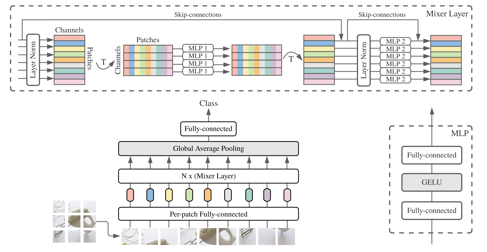
1. 输入处理（Patches）
- MLP-Mixer 先将输入分割成固定大小的多个小块（Patches）
- Patches 经过全连接层（Per-patch Fully-connected），被映射为特征向量
2. 混合层（Mixer Layer）
模型的主体是由 \(N\) 个 Mixer Layer 堆叠而成的。每个 Mixer Layer 主要包含两个交替的 MLP 模块，用于在不同维度上混合信息：
- MLP1（跨 Patch 混合）：
- 模型通过 Layer Norm 和转置（T），将数据维度翻转
- 在不同的 Patches 之间进行计算，整合不同空间位置（上下文）的信息
- MLP2（跨通道混合）：
- 再次转置后，数据进入 MLP2
- 在通道（Channels）维度上进行计算，整合每个位置内部的深层特征信息
- Skip-connections：与 Transformer 类似，这两种 MLP 操作的前后都加入了跳跃连接，以确保深层网络的梯度传递和有效训练。
4.3 Linear Attention¶
线性注意力(Linear Attention) 本质上是对传统 RNN 和传统自注意力机制（Self-Attention）的一种极限简化与融合
- Linear Attention is RNN without forget gate \(f_{A,t}\)
- Linear Attention is Self-attention without Softmax
在一个标准的 RNN 模型中，隐藏状态 \(H_t\) 和输出 \(y_t\) 定义如下：
- 状态更新：\(H_t = f_{A,t}(H_{t-1}) + f_{B,t}(x_t)\)
- 输出计算：\(y_t = f_{C,t}(H_t)\)
How to parallel
在标准的 RNN 中，\(H_t\) 的计算非常复杂。为了实现并行，引入一个极端的简化操作：去掉 RNN 的遗忘门/状态转换函数，即假设 \(f_{A,t}(H_{t-1}) = H_{t-1}\)。此时，隐藏状态的更新变成了一个简单的累加过程：
令 \(D_t = f_{B, t}(x_t)\)，则隐藏状态 \(H_t\) 等于所有输入变换矩阵 \(D\) 的累加：
在上述基础上，引入注意力机制中的 Query (\(q\))、Key (\(k\))、Value (\(v\)) 概念：
- \(q_t=W_q x_t, k_t=W_k x_t,v_t=W_v x_t\)
- 并令 \(f_{B, t}(x_t) = v_t k_t^T\), \(f_{C,t}(H_t)=H_t q_t\)，可以得到 \(y_t\) 的计算公式：
4.4 Retention Network¶
RetNet 是在 Linear Attention 基础上提出的架构，它解决了 "Linear Attention never forget" 的缺陷，使模型能够更灵活地处理上下文
- 引入了一个固定衰减因子 \(\gamma\)。
4.4.1 Gated Retention Network¶
- 模型通过当前输入 \(x_t\) 动态计算出一个门控值 \(\gamma_t\)
- 具体公式为：\(\gamma_t = \text{sigmoid}(W_{\gamma} x_t)\)
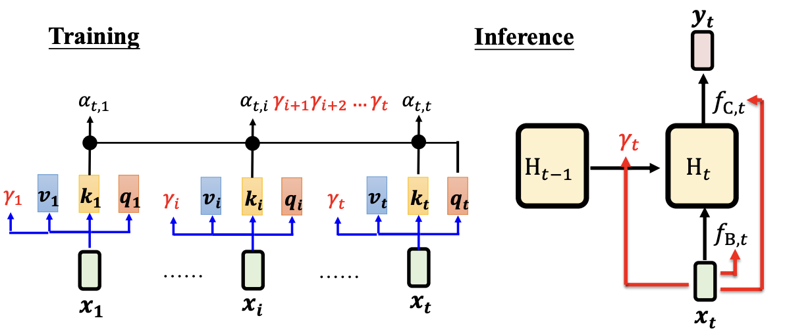
4.4.2 More Variants¶
- 引入门控矩阵 \(G_t\)，符号 \(\odot\) 表示逐元素相乘
- 模型在将新信息（\(v_t k_t^T\)）加入记忆之前，会先用 \(G_t\) 对历史记忆 \(H_{t-1}\) 进行筛选和过滤
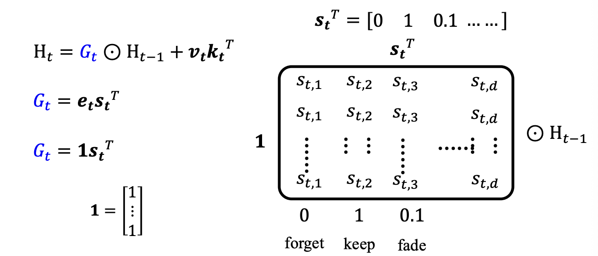
- 模型会为每一个维度生成一个控制向量 \(s_t^T\)，例如\(s_t^T = [0, 1, 0.1, \dots]\)
- 0 代表 Forget：直接清零丢弃
- 1 代表 Keep：100% 完整保留到下一步。
- 0.1（介于 0 到 1 之间的值）代表 Fade：信息打折衰减
5. BERT and its variants¶
5.1 Pre-train Model¶
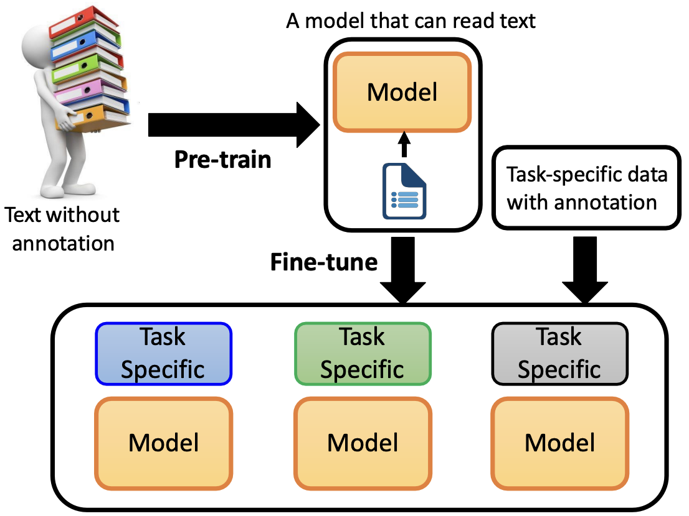
- Pre-train：采用无标注的数据，掌握基础语言能力
- Fine-tune：使用少量有标注的特定任务数据进行针对性训练，让模型适应具体需求
- Task Specific Model：同一个通用模型转化为多个解决不同问题的专用模型
5.1.1 Word Representing¶
Represent each token by a embedding vector
- 静态 Embedding（Word2vec、GloVe）
- 每个 Token 对应固定的向量，通过“查表”获取
The token with the same type has the same embedding. - 无法捕捉 Token 在不同语境中的语义变化，对生僻词/未登录词支持较差
- 每个 Token 对应固定的向量，通过“查表”获取
- 子词级 Embedding（FastText）
- 将 Token 拆解为更小的子词单元
如英文单词拆为字符/词根词缀，中文拆为部首/笔画，通过子词组合生成向量 - 利用 Token 内部结构信息，增强模型的泛化能力
- 将 Token 拆解为更小的子词单元
- 字形结构 Embedding（CNN+汉字图像）
- 将汉字视为图像，通过 CNN 提取特征（如笔画、部首），生成包含视觉信息的向量
- 捕捉汉字的视觉结构关联，尤其适合处理生僻字、异体字
Contextualized Word Embedding
- 结合上下文，为同一个字生成不同的向量表示
5.1.2 Different size of models¶
Bigger model
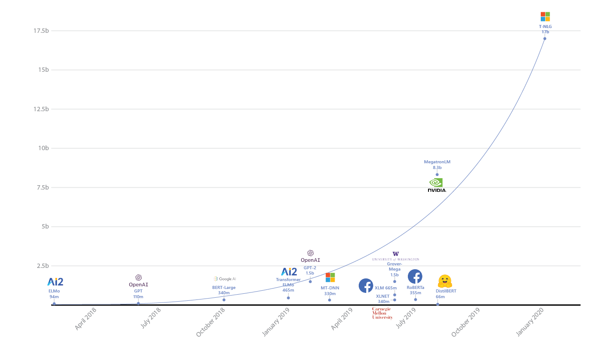
Smaller Model: using network compression
- Network Pruning：
剪掉模型中不重要的连接，像修剪树枝一样，减少冗余 - Knowledge Distillation：
让小模型模仿大模型的行为，用更小的体积实现类似的效果 - Parameter Quantization：
降低参数精度，在不明显影响效果的前提下，大幅减小体积并提速 - Architecture Design：
直接设计轻量级的网络结构，从源头上保证模型小巧高效。
5.2 How to fine-tune¶
Pre-trained Model
- 在海量通用数据（如维基百科、网页文本）上训练好的大模型（例如 BERT、GPT）
- 图底部的 \(w_1, w_2, w_3, w_4\) 代表输入的单词或词向量。
Task-specific Layer
- 针对特定的自然语言处理任务（如情感分类、问答系统等）进行输出
- 原理：预训练模型本身只知道“语言知识”，不知道具体要做什么任务
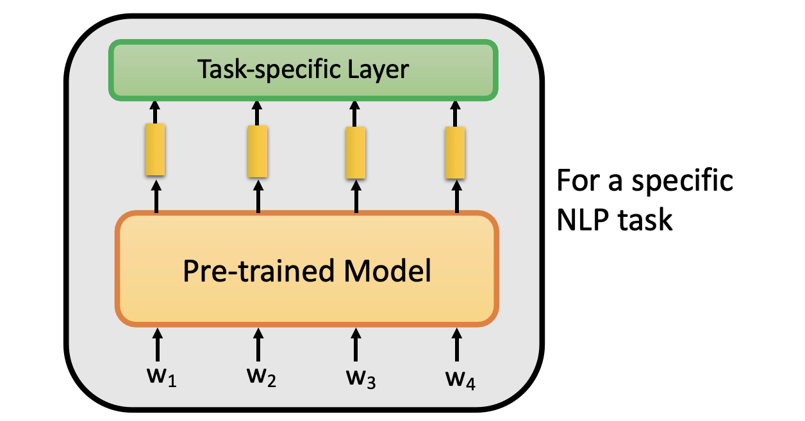
数据流向：输入单词 -> 经过预训练模型提取特征 -> 进入特定任务层 -> 得到最终结果
- 模型会在特定任务的数据集上继续训练（微调），以适应新任务
5.2.1 Input¶
Multiple sentences
模型接收拼接后的完整序列（句子1 + 分隔符 + 句子2），对输入序列中的每个部分进行编码，输出包含上下文信息的特征表示
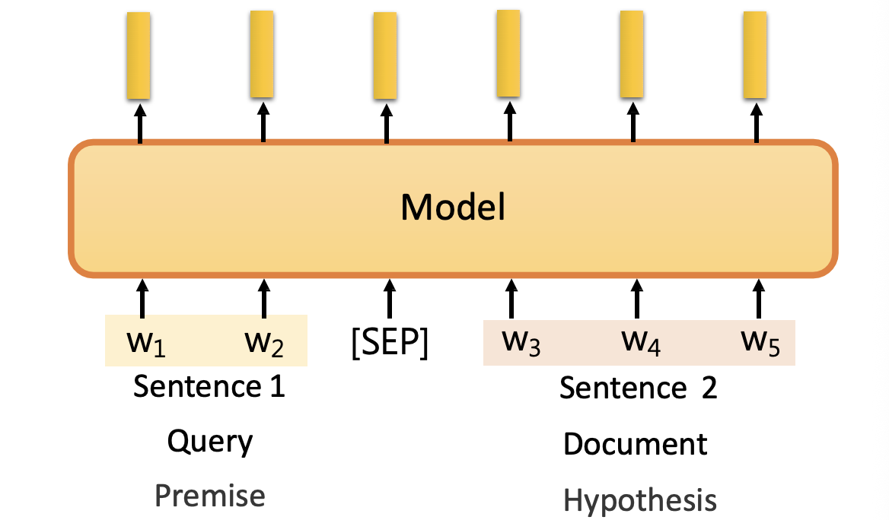
句子拼接
- Sentence1（左侧）：由单词 \(w_1, w_2\) 组成
- Sentence2（右侧）：由单词 \(w_3, w_4, w_5\) 组成
- [SEP]标记：一个特殊的分隔符，这是 BERT 等模型处理双句任务的标准格式
5.2.2 Output¶
-
One class：最基础的输出模式
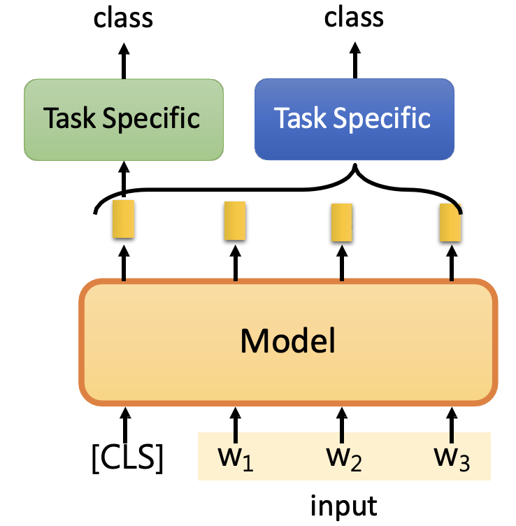
- 模型只取输入序列中第一个 token（即 [CLS]）经过模型编码后的输出向量，将其送入分类器（Task Specific 层）
- 因为 [CLS] 在预训练中聚合了整个句子的信息，所以适合做全局判断
- 应用场景：情感分析、文本分类
[CLS] 如何训练得出？
- 初始状态：刚开始 [CLS] 向量是随机的
- 训练机制：
- 输入：[CLS] 和其他词一起输入
- 交互：通过 self- attention， [CLS] 会看整句话的内容并整理信息
- 目标：在训练时，强制要求模型只用 [CLS] 最终输出的那个向量来做预测
- 结果：为了能预测对，模型不断调整参数，让 [CLS] 整合句子的关键信息
- class for each token
- 模型关注序列中的每一个标记（包括 \(w_1, w_2, w_3\)）
- 输入序列中的每个标记都对应一个输出向量，然后每个向量经过一个特定任务层，独立地预测一个类别
- 应用场景：命名实体识别（识别句子中哪些词是人名、地名）、词性标注
-
copy from input
- 模型的输出不是生成新的文本，而是直接从输入文本中复制一段连续的内容
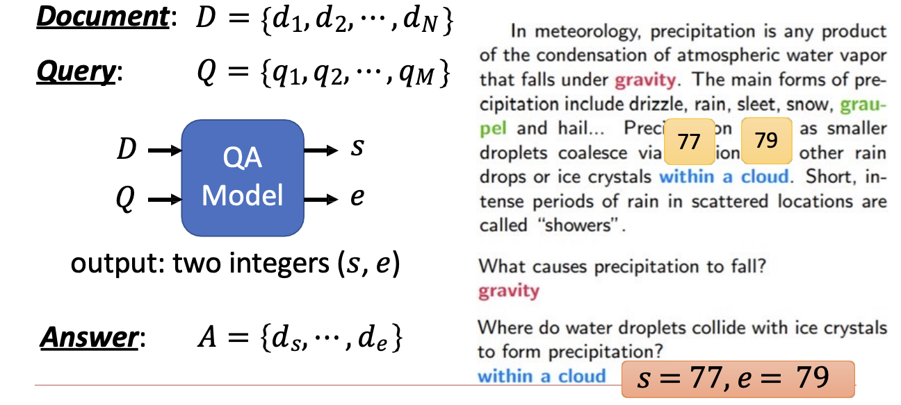
- 如图，将文本内容分别和“起始向量”、“结束向量”求相似度（点积）
- 橙色代表“起始向量”，蓝色代表“结束向量”
- 结果通过 softmax 后，可以看到 \(d_3\) 是结束位置的概率最大
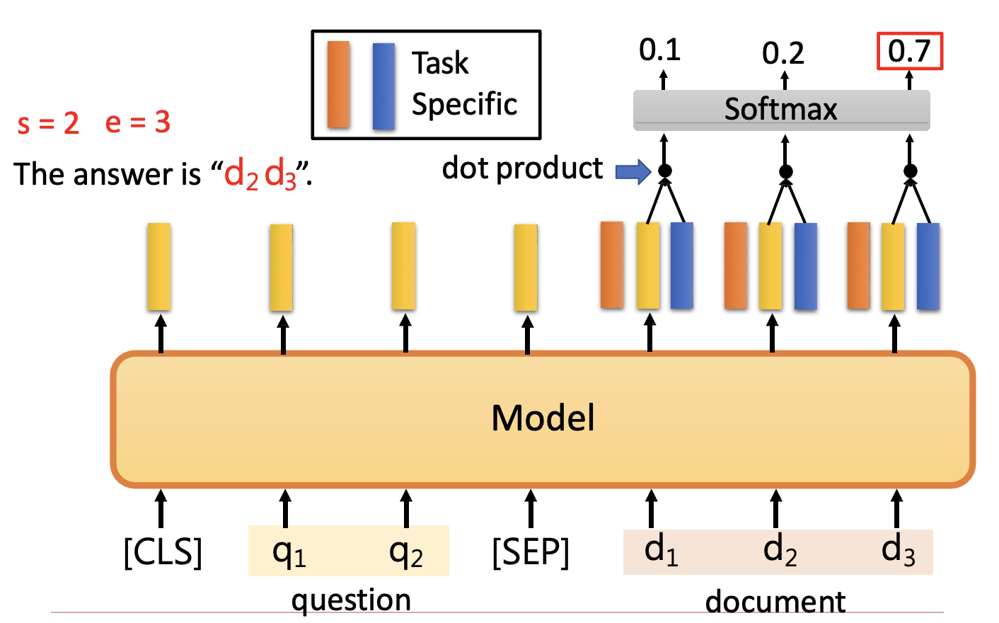
-
General Sequence
Seq2Seq Model- 输入和输出是完全分离，解码器从零开始生成全新的输出序列
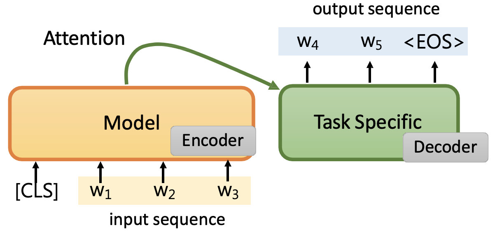
"Decoder-only"，GPT 系列采用的架构
- 不再区分编码器和解码器，只有一个统一的模型
- 模型从左到右依次生成，生成 \(w_3\) 后，把它作为输入的一部分，再去预测 \(w_4\)，以此类推
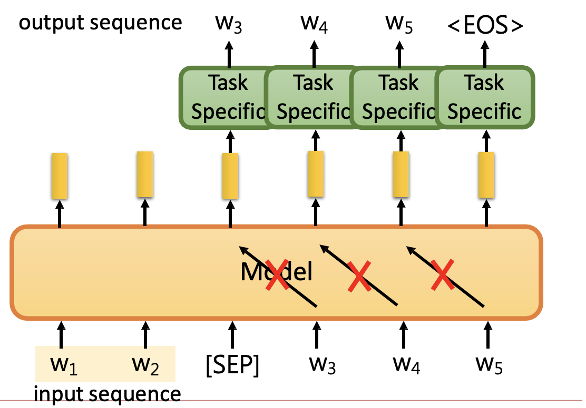
5.2.3 Full Fine-tuning & Feature Extractor¶
Full Fine-tuning¶
整个模型（包括预训练层和任务特定层）都会在下游任务（Down-stream tasks）的数据上进行训练
- 操作方式：加载预训练的权重作为初始值，然后通过反向传播（Backpropagation）更新所有参数
Feature Extractor / Linear Probing¶
把预训练模型作为一个固定的工具，用来提取输入数据的特征
- 冻结 预训练模型的所有参数，只对“任务特定层（Task-specific layer）”进行训练
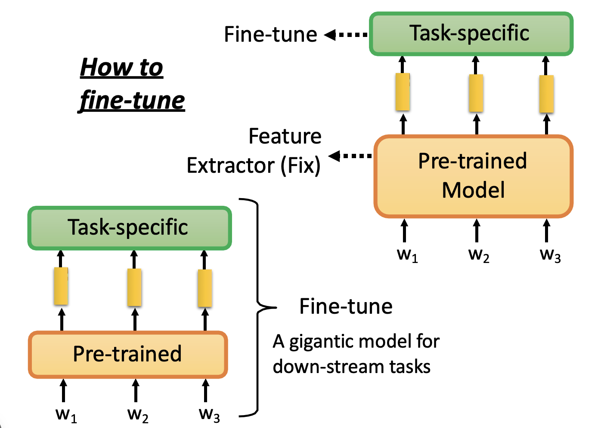
两者的折中方案： 使用 PEFT (Parameter-Efficient Fine-Tuning)
5.2.4 Adapter-based Tuning¶
参数高效微调 (PEFT, Parameter-Efficient Fine-Tuning) 技术的一种早期代表方案
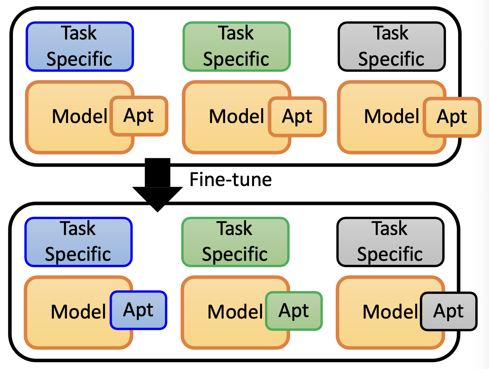
冻结原始 pre-train model 的参数，只针对 Task Specific 和 Apt 模块进行参数更新
- 存储成本低：adapter 文件很小
- 训练效率高：更新的参数量极少，训练时的梯度计算和显存压力显著减小
- 防止灾难性遗忘： 原始模型参数根本没动，它原本具备的通用知识得到保留
Adapter
Houlsby, et al., ICML’19
在标准 Transformer 的每个子层之后都插入了一个 Adapter：确保模型在处理完“注意力关系”和“特征变换”后，都能立即通过一个可学习的“补丁”来调整输出，使其适配下游任务。
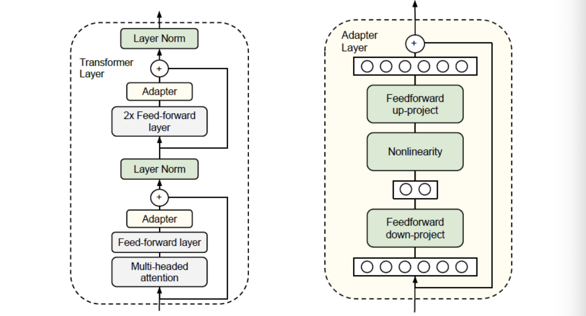
Adapter 采用了瓶颈（Bottleneck）结构：
- Feedforward down-project： 将高维的输入特征映射到一个极低维的空间
- Nonlinearity： 通常使用 ReLU 或 GELU。如果没有这一层，两次投影就退化成了单一的线性变换，失去了模拟复杂特征的能力
- Feedforward up-project： 将低维特征重新映射回原始维度，以便与主干网络的输出进行叠加
- Skip-connection： 在训练初期，如果 Adapter 的权重接近于 0，通过残差连接，输出就等于输入。这意味着模型即使加了 Adapter，起步表现至少也是预训练模型的水平，不会因为新增层没练好而改坏了原有特征
但上述方法需要在训练的一开始就在模型中加入 adapter，这非常不灵活，因此现在很少采用这种做法。更为流行的参数高效微调方式是 LoRA (Low-Rank Adaptation)
- 冻结原始预训练模型权重，只额外训练一小组低秩矩阵来近似需要的权重更新
- 在原有线性层权重 \(W\) 上，不学习完整的 \(\Delta W\)，而是学习低秩分解 \(BA\)，大幅降低了训练的参数量
LoRA
假设原来某一层是线性变换：
全量微调会直接更新整个 \(W\), 但LoRA 不这么做，而是冻结 \(W\)，只学习：
其中：
- \(A\) 和 \(B\) 是两个小矩阵，它们的中间秩 \(r\) 很小，远小于原始维度
- 所以 \(\Delta W\) 虽然看起来和 \(W\) 同形状，但本质是由一个低秩结构生成的
这就是“low-rank”的含义。原论文的核心假设是：下游任务适配所需的权重变化，往往具有较低的“内在秩”，因此没必要为每层学习一个完整的满秩更新。
5.2.5 Weighted Features¶
加权特征融合 (Weighted Features) 在早期的预训练语言模型（ELMo）中非常常见
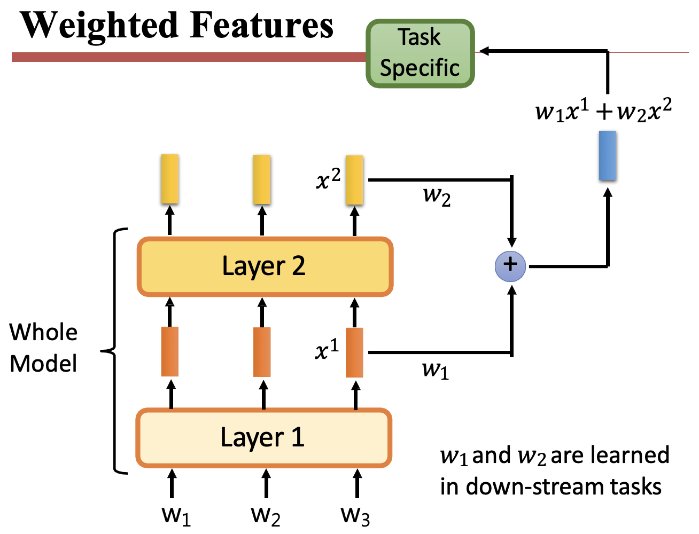
- \(x^1\) 与 \(x^2\)： 分别代表第 1 层和第 2 层提取出来的特征向量（Embeddings）
- \(w_1\) 与 \(w_2\) (可学习权重)： 系统会为每一层分配一个权重，公式表达为
- 这里的 $w_1$ 和 $w_2$ 是在下游任务的训练过程中学习出来的，而不是预训练时确定的
- Task Specific：接收加权求和后的综合特征，进行分类、序列标注等最终任务
5.3 How to Pre-train¶
Self-supervised Learning：不依赖人工标签，而是从原始数据中自动构造训练目标
5.3.1 Masking Input¶
- BERT 采用的预训练方法：随机选一些 token，然后根据上下文预测原来的词
- 这种设计存在一个问题：训练的情况和实际需要预测的情况存在偏差
- 原论文中，BERT 会先抽取 15% 的 token 作为预测目标；
- 这些被选中的 token 里，80% 替换成 [MASK]，10% 换成随机词，10% 保持原词不变
- BERT 的思想和 CBOW 类似，但 BERT 采用了 Transformer encoder
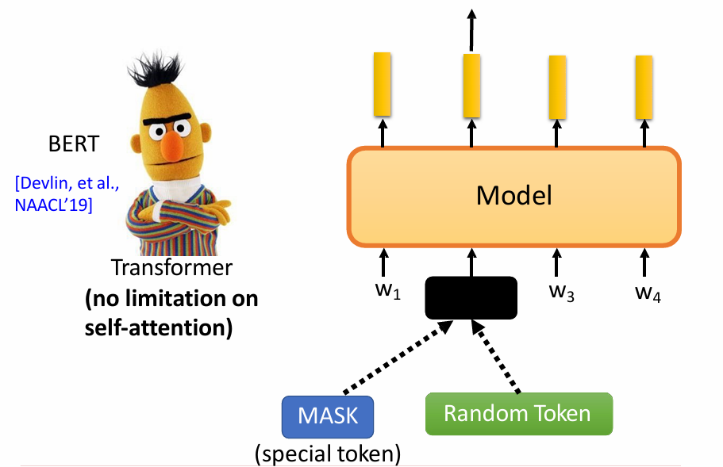
5.3.2 Predict Next Token¶
自回归语言模型（autoregressive language model）
- OpenAI 在 GPT 早期论文里把这条路线称为 generative pre-training
- 即先在大量无标注文本上做语言模型训练，再迁移到下游任务
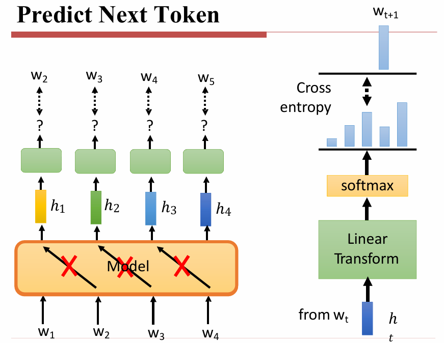
训练过程：
- 模型先根据 \(w_t\) 得到当前位置的隐藏状态 \(h_t\)
- 经过一个线性层（Linear Transform）
- 再经过 softmax，得到“下一个词是哪个”的概率分布
- 然后用 cross-entropy（交叉熵） 去和真实的 \(w_{t+1}\) 比较，计算损失
5.3.3 Predict Next Token - Bidirectional¶
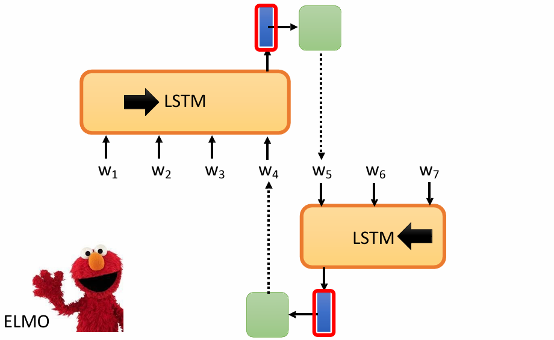